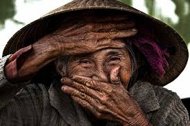
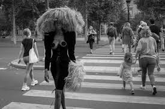
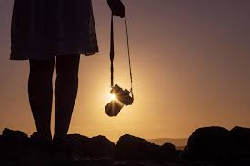

Nature Photography
Nature photography captures the beauty of landscapes, forests, and wildlife, showcasing the raw essence of our planet.

Portrait Photography
Portrait photography focuses on emotions and expressions, telling a story through a single face.

Street Photography
Street photography captures real-life moments in urban environments, full of life and spontaneity.

Wildlife Photography
Wildlife photography brings you closer to animals in their natural habitat, revealing their beauty and behavior.

Travel Photography
Travel photography documents cultures, places, and experiences from around the world.

Creative Photography
Creative photography blends imagination with reality to create visually stunning art.